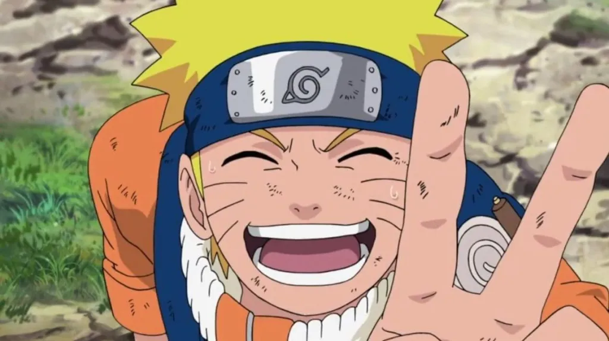

Esqueça Ultimato: Vingadores 5 pode ser o maior filme da Marvel com a volta de
mais de 60 personagens
Esqueça Ultimato: Vingadores 5 pode ser o maior filme da Marvel com a volta de
mais de 60 personagens
 Após 26 anos, GTA 6 incluirá pela primeira vez um dos recursos preferidos de todo
bom fã de videogame
Após 26 anos, GTA 6 incluirá pela primeira vez um dos recursos preferidos de todo
bom fã de videogame

Naruto ganhará novos episódios! Veja o que sabemos do especial de 20 anos